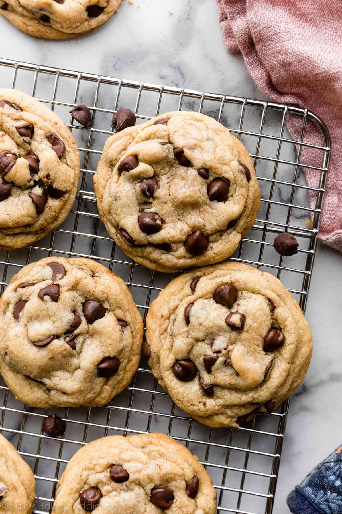

Home
Cookie Recipe
Cookies are small, sweet, flat-baked treats typically made from flour, sugar,
fat, and eggs, crisp on the edges and soft or chewy in the center.
You can bake a classic batch of chocolate chip cookies in under 30 minutes using basic pantry staples.

Ingredients
- Butter: 1 cup (226g) unsalted butter, softened
- Sugar: 1 cup packed brown sugar and ½ cup white granulated sugar
- Eggs & Flavor: 2 large eggs and 1 tsp vanilla extract
- Dry base: 2 ½ cups (300g) all-purpose flour, 1 tsp baking soda, and 1 tsp salt
- Mix-ins: 2 cups semisweet chocolate chips
Chewy Chocolate Chip Cookies Recipe on YouTube
Watch directly on YouTube:
Cookie Recipe Video
Instructions
- Preheat: Set your oven to 350°F (175°C) and line a baking tray with parchment paper.
- Cream: Beat the softened butter, brown sugar, and white sugar together until smooth and creamy.
- Add liquids: Mix in the eggs one at a time, followed by the vanilla extract.
- Combine dry: Whisk the flour, baking soda, and salt in a separate bowl, then gradually stir them into the wet mixture until just combined.
- Fold: Gently mix in the chocolate chips.
- Bake: Scoop tablespoon-sized dough balls onto the tray, leaving 2 inches between each, and bake for 8 to 12 minutes until the edges turn golden brown.
- Cool: Let the cookies sit on the warm tray for 5 minutes to set before moving them to a wire rack.